BIOLOGICAL DIVERSITY: ANIMALS I
by Michael J. Farabee, Ph.D., Estrella Mountain Community College, updated 1/07
Table of Contents
Organization of the
Animal Body | Evolution
and Classification of Animals | Trends
in Animal Evolution
Sponges: The
Phylum Porifera | Tissues:
Jellyfish, Corals and Sea Anemones
Bilateral Symmetry
and Cephalization: Phylum Platyhelminthes | The
Phylum Nemertea: Ribbon Worms
The Phylum Rotifera |
The
Tube-within-a-tube Body Plan: Phylum Nematoda |
Learning Objectives
| Terms
Review Questions |
Links
Organization
of the Animal Body | Back to
Top
Animals are characteristically multicellular
heterotrophs
whose cells lack cell
walls. At some point during their lives,
animals are capable of movement. In the most commonly encountered
animals, this stage is the adult, although some animals (corals) have
sessile (nonmobile) adult phases and mobile juvenile forms. Animal
and plant evolutionary history both show the development of
multicellularity and the move from water to land (as well as
secondary adaptation back to water).
Animals developed external or internal
skeletons
to provide support, skin to prevent or lessen water loss, muscles
that allowed them to move in search of food, brains and nervous
systems for integration of stimuli, and internal digestive
systems.
Most animals have a life cycle with a preadult
stage, a predominance of the diploid stage, and a series of embryonic
developmental stages.
Evolution and
Classification of Animals | Back
to Top
Animals probably evolved from marine
protists,
although no group of protists has been identified from an at-best
sketchy fossil record for early animals. Cells in primitive animals
(sponges in particular) show similarities to collared
choanoflagellates as well as pseudopod-producing amoeboid cells.
Multicellular animal fossils and burrows
(presumably made by multicellular animals) first appear nearly 700
million years ago, during the late precambrian time (the part of the
Proterozoic era termed the Vendian). All known Vendian animal fossils
had soft body parts: no shells or hard (and hence preservable as
fossils) parts. Learn more about these early animal fossils at
Learning
About the Vendian Animals. Animals in
numerous phyla appear at (or in many cases before) the beginning of
the Cambrian Period, as shown in Figure 1.
|
Figure 1. First appearances and relative
diversity (width of shaded area) for major groups of
animals. Image from Purves et al.,
Life: The Science of Biology, 4th Edition, by Sinauer
Associates (www.sinauer.com)
and WH Freeman (www.whfreeman.com),
used with permission.
|
|
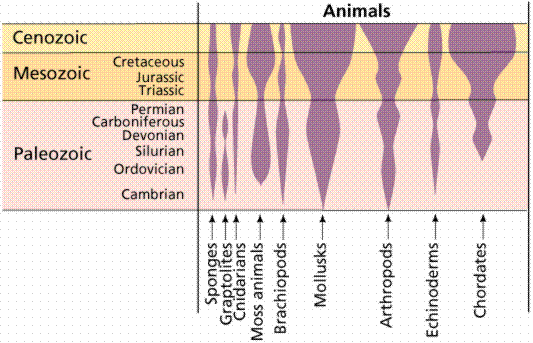
|
Multicellular
protists appeared in the fossil
record more than 600 million years ago
near the very end of the precambrian. This time is referred to as the
Vendian Period (650 to 544 million years ago), and is characterized
by the appearance of soft-bodied animal fossils, some of which are
shown in Figure 2. Multicellular animal fossils and burrows
(presumably made by unknown, soft-bodied multicellular animals) first
appear 700 million years ago, during the Vendian time. All known
Proterozoic animal fossils had soft body parts: no shells or hard
(and hence preservable as fossils) parts. There are some
paleontologists who suspect that the Vendian faunas were reduced by
an extinction event, possibly related to massive glaciation, at the
close of the vendian time. In any event, many animals in the Vendian
assemblages are quite unlike anything living today, while others can
be traced to extant phyla.
The Cambrian: Animals with Hard Body Parts
Beginning 570 million years ago, early during the
Cambrian time, animals with external skeletons appeared in great
abundance. This sudden appearance of fossils was used to define the
beginning of the Cambrian (named after Cambria, an ancient name for
the country of Wales). External skeletons were hard enough to be more
readily preserved, leading to the apparent explosion of animals early
in the Cambrian. Soft-bodied animals had dominated early animal
evolution during an earlier time just prior to the Cambrian, the
Vendian.
Modern animals are classified into between 30 and
35 phyla: all major modern phyla were present at the beginning of the
Cambrian, along with a great variety of now-extinct phyla recorded in
the Burgess Shale (Cambrian) in Canada. Of the animal phyla,
scientists consider nine major invertebrate phyla and the chordates
to be of major importance in terms of biological diversity. While all
major animal phyla are represented by Cambrian fossils,
reconstructing fossil history is extremely difficult since earlier,
soft-bodied animals did not fossilize well. Consequently,
evolutionary relationships have been established for the most part on
a studies of living (referred to as extant) animal
anatomy.
Trends in Animal
Evolution | Back to Top
Within the animal kingdom several evolutionary
trends and advancements are seen. Note that not all animal groups
have all of the organs and organ systems found in the "higher
animals", a fact consistent with stepwise evolutionary history . Nor
will their body plans necessarily conform to ours.
Body Plans
Most animals have a body plan best described as a
"tube-within-a-tube".
This plan calls for two openings: one for food to
enter the body (mouth), one for wastes to leave the body
(anus).
The tube-within-a-tube plan allows specialization of parts along the
tube, such as a stomach, intestine, etc. The
sac-like body plan has only one opening for both food intake and
waste removal. Sac-like body plan animals do
not have tissue specialization or development of organs.
Animals with the "tube-within-a-tube" plan are 10%
more efficient at digesting and absorbing their food than animals
with the sac-like body plan.
Triploblasty: Three Tissue Layers
Many, but not all, animals produce three embryonic
tissue tissue layers (shown in Table 1) as they develop: the
endoderm,
mesoderm,
and ectoderm.
Some animals, most notably sponges, lack these tissue layers.
Cnidarians (a group including coral and jellyfish) have only two of
these layers, and are termed diploblastic. Flatworms, ribbon worms,
humans, etc. have all three tissue layers, and are triploblastic.
|
Table 1. Animal embryonic tissue layers.
|
|
Tissue
layer
|
Adult
tissues arising from this embryonic tissues
|
|
endoderm
|
digestion and
respiration structures
|
|
mesoderm
|
muscles, bones, blood, skin, and reproductive organs
|
|
ectoderm
|
skin, brain, and nervous
system
|
|
Asymmetry and Symmetry
Asymmetrical animals (sponges, shown in Figure 4)
have no general body plan or axis of symmetry that divides the body
into mirror-image halves. Within the animal
kingdom this appears to be a primitive condition. More advanced
animals have symmetry. Radially
symmetrical animals (such as coral and
jelly fish, Figure 4) have body parts organized about a central axis,
like the spokes in a bicycle wheel, with multiple planes of symmetry.
Radially symmetrical animals are often, for some part of their life,
nonmotile (termed in animals as sessile), and live attached to a
substrate. Radial symmetry allows animals, such as jellyfish, corals,
and sea anemones, to reach out in all directions from one central
point. Bilaterally
symmetrical animals (such as humans,
Figure 3) have only a single plane of symmetry that produces mirror
halves. Bilaterally symmetrical animals tend to be active and to move
forward at an anterior end, which eventually led to concentration of
sensory organs in the anterior end, or head (a trend known as
cephalization).
|
Figure 3. Different body plans. There are
no planes of symmetry in the asymmetrical form, while the
radial form has numerous planes. Bilateral organisms, like
humans, have only one plane of symmetry, extending from the
head to the toe. Bilateral symmetry is an important step in
development of a head and concentration of sensory organs in
that head. Image from Purves et al.,
Life: The Science of Biology, 4th Edition, by Sinauer
Associates (www.sinauer.com)
and WH Freeman (www.whfreeman.com),
used with permission.
|
|
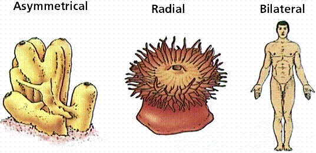
|
Body Cavity and Development
Acoelomate
animals (like flatworms and flukes, shown in Figure 4) do not have a
coelom
(or body cavity) produced during preadult development.
Pseudocoelomate
animals (such as roundworms) have a body cavity but it does not
develop from splitting of the mesoderm
embryonic tissue layer.Coelomate
animals (humans, fish, shrimp, such as shown in Figure 4) have a body
cavity lined with mesoderm cells.
|
Figure 4. Three body cavity styles in
modern animals. Images from Purves et
al., Life: The Science of Biology, 4th Edition, by
Sinauer Associates (www.sinauer.com)
and WH Freeman (www.whfreeman.com),
used with permission.
|
|
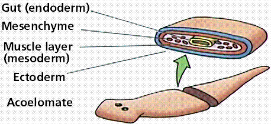
|
|
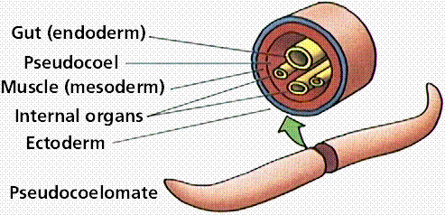
|
|
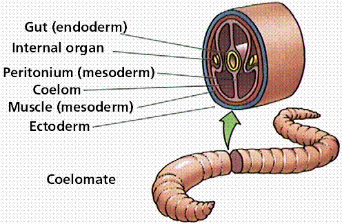
|
Protostome and Deuterostome
Coelomates fall into either protostomes
or deuterostomes,
depending on how their embryos develop, as shown in Figure 5.
Protostomes (from the Greek meaning literally "first mouth") are
coelomates whose embryonic development makes a blastopore (the first
opening in the blastula) that later develops into a mouth.
Deuterostomes ("second mouth") are coelomates whose embryonic
development produces a blastopore that later forms an anus, with a
second opening forming the mouth (hence the designation of "second
mouth"). Vertebrates
are deuterostomes.
|
Figure 5. Differences in cleavage between
the embryos of protostomes and deuterostomes.
Images from Purves et al., Life: The
Science of Biology, 4th Edition, by Sinauer Associateswww.sinauer.com)
and WH Freeman (www.whfreeman.com),
used with permission.
|


|
Segmented Bodies
Some animals have their bodies divided into
segments, as shown in Figure 6. Segmentation
allows them to specialize certain segments, such as for antennae,
eyes, claws, etc. Humans, insects, and earthworms are examples of
segmented animals. The systematic value of segmentation has been
downplayed, with most specialists favoring segmentation arising from
convergent evolution. However, the genes controlling segmentation in
each of these groups are the same, leading to a rethinking of the
taxonomic value of segmentation.
|
Figure 6. Examples of body segments as
seen in a crayfish. Segmentation of the body allows
development of various specialized limbs, such as antennae,
pincers, walking legs, swimming legs, and feeding
appendages. Image from Images of Biology (out of
print).
|
|
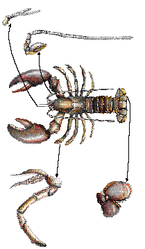
|
Sponges: The Phylum
Porifera | Back
to Top
The phylum Porifera ("pore-bearing") consists of
approximately 5,000 species of sponges. These asymmetrical animals
have sac-like bodies that lack tissues, and are usually interpreted
as representing the cellular level of evolution. Cells from
fragmented sponges can reorganize/regenerate the sponge organism,
something not possible with animals that have tissues. Most
zoologists consider sponges as offshoots that represent an
evolutionary dead-end., although others consider some groups of
sponges as being related to other animal groups. Sponges are aquatic,
largely marine, animals with a great diversity in size, shape, and
color.
Modern sponges greatly resemble some fossil
Cambrian
sponges. Sponges may have evolved from a colonial protozoan, as shown
in Figure 8. There are no true tissues in
sponges: merely specialized cell layers.
Epidermal cells in sponges line the outer
surface. Collar cells line the inner cavity.
Beating collar cells produce water currents that flow through pores
in sponge wall into a central cavity and out through an osculum, the
upper opening. A 10 cm tall sponge will filter as much as 100 liters
of water a day. Amoeboid cells occupy the
"inner" layer, along with hardened structures known as
spicules.
Sponges feed by drawing water into the body
through a network of pores (hence the name porifera,
pore-bearer) and passing it out through the large opening (osculum)
at one end of the body.
|
Figure 7. Organization of the sponge
body. Note the lack of tissues. Sponges demonstrate the
cellular level of organization. Also notice the resemblance
between the collared choanoflagellate cells in the top
drawing, and the collar cells in the sponge. Images from
Purves et al., Life: The Science of Biology, 4th
Edition, by Sinauer Associates (www.sinauer.com)
and WH Freeman (www.whfreeman.com),
used with permission.
|
|
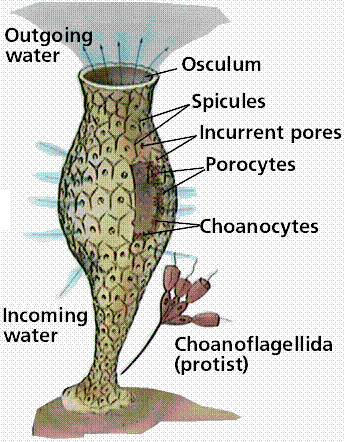
|
|
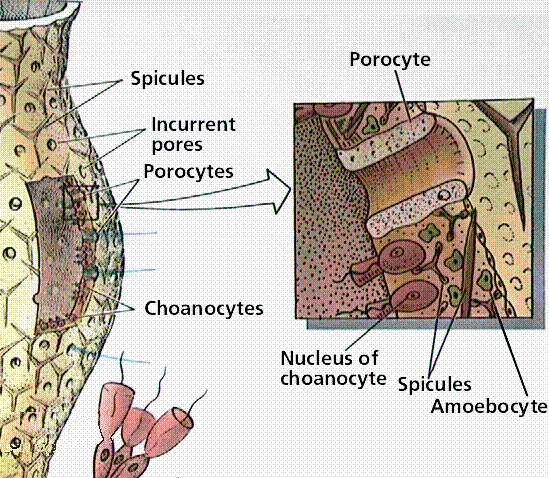
|
Sponges can reproduce asexually
(by budding
or from fragments) or sexually.
Sponges produce eggs and sperm that are
released into a central cavity of the sponge, in which the
zygote
develops into a ciliated larva. The larval stage is able to move
about while the adult is stationary.
The fossil record of sponges has been at times
quite good. The oldest sponges date from the precambrian. One early
example of fossil sponges are the archaeocyathids, one of the first
reef-building animals. Archaeocyathids
evolved and went extinct before then end of the Cambrian Period.
Cladistic analysis by J. Reitner in 1990 suggests archaeocyathids are
properly placed in the Phylum Porifera instead of having their own
phylum. Living sponges fall into three groups: the calcareous (an
example of which is shown in Figure 9), glass, and demosponges, based
on the chemical composition of spicules.
Tissues: Jellyfish,
Corals and Sea Anemones | Back
to Top
The phylum Cnidaria contains 10,000 species
characterized by adult bodies having radial symmetry.
Cnidarians are aquatic, mostly all marine.
The cnidarian body has only the ectoderm and endoderm
tissue layers, making this group diploblastic. Members of this phylum
all have stinging cells that eject a barbed thread and possibly a
toxin. Only cnidaria have these cnidocytes (shown in Figure 9), a
specialized cell that contains a nematocyst, a fluid-filled capsule
containing a long, spirally coiled hollow thread. When the trigger of
the cnidocyte is touched, the nematocyst is discharged. Some threads
merely trap a prey or predator, while others have spines that
penetrate and inject paralyzing toxins.
These toxins make some jellyfish (and a related group
the box jellies) among the most poisonous of animals.
|
Figure 9. Cnidocyte/nematocyst in a
cnidarian. These stinging cells allow the animal to capture
small prey, as well as offer some defense if
attacked. Image from Purves et al.,
Life: The Science of Biology, 4th Edition, by Sinauer
Associates (www.sinauer.com)
and WH Freeman (www.whfreeman.com),
used with permission. |
|
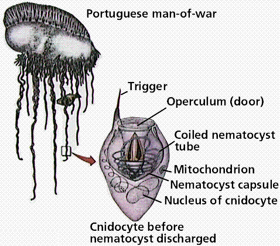 |
Cnidarians have two body forms that may occur: a
mobile medusa
and a sessile (fancy term for not mobile) polyp,
both of which are shown in Figure 10. Both
body forms have tentacles arranged around an opening into the
two-layered sac-like body. The inner tissue layer (derived from
endoderm) secretes digestive juices into the gastrovascular cavity,
which digests food and circulates nutrients (doing the job our
circulatory AND digestive systems do). Muscle
fibers occur at the base of the epidermal
and gastrodermal cells, making this the first group of muscled
animals. Nerve
cells located below epidermis near the
mesoglea interconnect and form a nerve net throughout the body.
Cnidarians have both muscle fibers and nerve fibers, making these
animals capable of directional movement. The nerve net allows
transmission of messages in more than one direction, possibly an
advantage in a radially symmetrical animal, while contraction of
muscle fibers (under control of the nerve fibers) allows for
movement. While they have a nerve net, brains
are not present.
|
Figure 10. Body types in a typical
cnidarian. Image from Purves et al.,
Life: The Science of Biology, 4th Edition, by Sinauer
Associates (www.sinauer.com)
and WH Freeman (www.whfreeman.com),
used with permission.
|
|
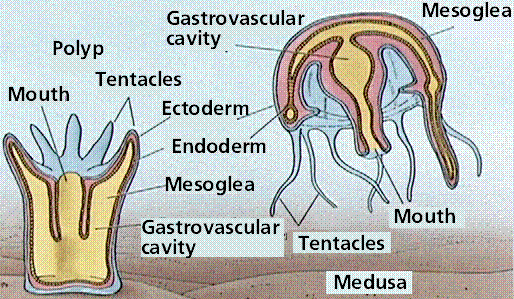
|
Cells are organized into tissues. The adult in
most species of cnidarian is radially symmetrical.
The typical cnidarian life cycle involves both sexual
and asexual reproduction. A bilaterally
symmetrical larva known as a planula (shown in Figure 11), develops
from a zygote.
The planula moves around and eventually settles down
in an appropriate location and grows into the adult polyp.
The polyp grows and may eventually reproduce asexually to form
medusae.
Each medusa develops gonads
and uses meiosis to form gametes.
|
Figure 11. Life cycle of a typical
cnidarian. In essence we see an "alternation of generations"
between the sessile polyp phase and the mobile medusa phase.
However, unlike plants, both phases are diploid. Image from
Purves et al., Life: The Science of Biology, 4th
Edition, by Sinauer Associates (www.sinauer.com)
and WH Freeman (www.whfreeman.com),
used with permission.
|
|
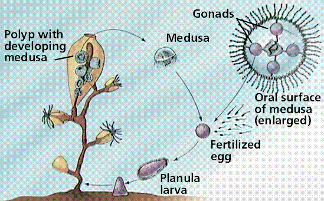
|
The phylum Cnidaria is usually subdivided into
three taxonomic classes:
class Anthozoa, class Hydrozoa, and class Schyphozoa.
Class Anthozoa: Sea Anemones and Corals
Sea anemones, shown in Figure 12, are solitary
polyps 5-100 mm in height and 5-200 mm in diameter or larger. They
are often brightly colored and look like flowers (specifically
anemones) on the seafloor. You might remember them from the film
Finding Nemo. The anemone's thick, heavy body rests on a pedal
disk and supports an upward-turned mouth surrounded by hollow
tentacles. Sea anemones feed on various invertebrates and fish. They
attach to a variety of substrates, or may be mutualistic with hermit
crabs, living attached to crab's shell.
|
Figure 12. Anatomy of a polyp. These
animals have an almost plant-like appearance, being anchored
in place. Image from Purves et al.,
Life: The Science of Biology, 4th Edition, by Sinauer
Associates (www.sinauer.com)
and WH Freeman (www.whfreeman.com),
used with permission. |
|
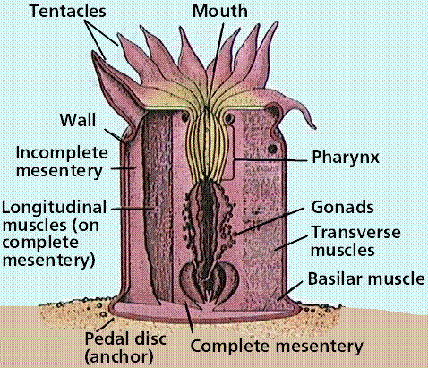 |
Corals may be solitary but most today are
colonial. The majority of corals occur in warm shallow waters; the
accumulation of their calcium-carbonate remains builds reefs. Some
corals occur in colder waters, so the mere presence of coral does not
necessarily indicate a tropical environment. Modern scleractinian
coral, dominant reef-builders since the Triassic period (some 230
million years ago), have symbiotic
photosynthetic dinoflagellates
living within the coral body. These dinoflagellates are in the genus
Symbiodinium, and are termed collectively zooxanthellae, shown
in Figure 13a. Figure 13b illustrates several living coral tyypes.
|
Figure 13. a. Coral polyps with
zooxanthellae (brown) dinoflagellates living symbiotically
within them. Image from http://www.biology.lsa.umich.edu/courses/bio255/zooxanthellae.jpg.
b. Two types of coral from Turniff Island, Belize. c. Brain coral, Long Cay, Belize. Figure b and c images copyright by Michael J. Farabee, all rights reserved; c. |
|

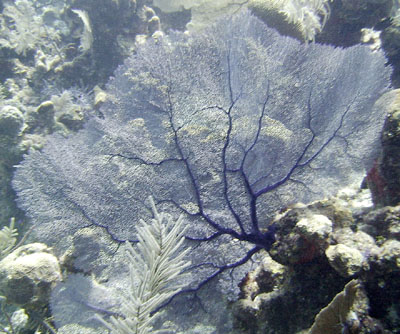
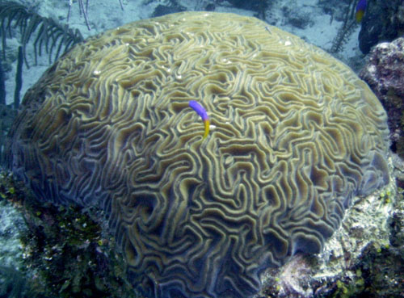
|
Class Hydrozoa: Hydras and Portuguese Man-of-war
(Physalia)
The polyp stage is dominant in members of this
taxonomic class. The Portuguese man-of-war is a colony
of polyps, with the original polyp becoming a gas-filled float. Other
polyps specialize for feeding or reproduction. The Portuguese
man-of-war can cause serious injury to swimmers since each tentacle
(in reality a string of individual organisms) has numerous
nematocysts.
Hydra, shown in Figure 14, are solitary,
freshwater hydrozoan polyps. The body is a small tube about
one-quarter inch long, best observed with a dissecting microscope.
Four to six tentacles surround the mouth, the only opening at into
the body. Hydra can move from one location by gliding or even
somersaulting. Hydras have both muscular and nerve fibers, and
respond to touch. Epidermal
cells are termed epitheliomuscular cells
and contain muscle fibers. Cnidocytes and sensory
cells are also present in the epidermis. Interstitial
cells can produce an ovary
or testis,
and may assist regeneration. Gland cells secrete digestive juices
into the gastrovascular cavity into which tentacles have stuffed
captured prey. Digestion is completed within food vacuoles of
nutritive-muscular cells. Nutrients diffuse
to the rest of the body. Hydras reproduce both sexually asexually (by
budding). In sexual reproduction, sperm
from a testis swim to an egg within an ovary. Following early
development within the ovary, a protective shell forms and allows the
embryo to survive until conditions are optimum. Hydra are
commonly utilized animals in biology labs.
Class Schyphozoa: True Jellyfishes (Aurelia)
The medusal stage is dominant in jellyfish (Figure
15) and other members of this taxonomic class. The polyp remains
small and inconspicuous. Jellyfishes also serve as food for larger
marine animals.
The Fossil Record of Cnidarians
The fossil record of cnidarians is very good for
hard-part containing corals, but usually not as good for soft-bodied
forms like jellyfish. Corals become dominant reef-building animals
during the Ordovician,
and continue their importance today. Corals, which had appeared
possibly as early as the late Proterozoic (precambrian, more than 540
million years ago), diversified into a number of groups during the
Silurian times. Tabulate corals and rugose corals were major
components of the new, larger reefs built during the Silurian through
Permian (the Permian ended 250 million years ago). Rugose corals
included the horn corals, while tabulate corals were colonial. Both
the rugose and tabulate corals went extinct at the close of the
Permian period. Figure 16 shows a coral collected in central Arizona.
|
Figure 16. Pachyphyllum nevadense
magnum from the Martin Formation (Jerome Member),
Devonian (approiximately 400 million years old) near Pine,
Arizona. Image from http://www.extinctions.com,
used with permission.
|

|
Near the end of the Devonian a mass extinction
occurred. This one was more severe on marine creatures than on the
newly established terrestrial forms. The corals were quite seriously
decimated, and the return of extensive reef building did not occur
until the Triassic with the evolution of a new group of reef-building
corals, the scleractinians (shown in Figure 17).
Corals were much restricted after the Devonian
crisis and the large reefs of the Devonian were replaced with smaller
reefs known as patch reefs. The role of corals in these new reefs was
much reduced from what it had been in earlier times.
Coral reefs, which had been decimated by the
Carboniferous extinction returned to prominence with the evolution of
new groups of reef-building animals and algae.
Bilateral
Symmetry and Cephalization: Phylum
Platyhelminthes |
Back to
Top
The phylum Platyhelminthes contains about 13,000
species of flatworms subdivided into three classes: two parasitic and
one free-living. The planaria and relatives
are freshwater animals placed in the class Turbellaria. Flukes are
external or internal parasites belonging to the the Class Trematoda.
Tapeworms are internal parasites and form the Class Cestoda.
The phylum as a whole has adult bilateral symmetry
and cephalization (the development of a head with sensory organs, in
most members).
Flatworms have three tissue layers: ectoderm,
mesoderm and endoderm and a body plan that is acoelomate and sac-like
with a single opening. The mesoderm layer gives rise to muscles and
reproductive organs. Free living forms have muscles, a nerve cord,
and digestive organs, but lack both the respiratory
and circulatory
systems common to the so-called "higher"
animals (in other words like ourselves). Flatworms, as shown in
Figure 18, have a branched gastrovascular cavity that is the site of
extracellular
digestion and which distributes nutrients
throughout the body. Gas exchange occurs by diffusion
through the skin. Platyhelminths have an excretory
system that also functions as an
osmotic-regulating system. Flatworms have a ladder-style
nervous
system composed of paired ganglia
that form a brain connected via nerve cells to sensory cells in the
body wall.
|
Figure 19. Anatomy of a flatworm. Note
the sensory lobes and digestive system.
Image from Purves et al., Life: The
Science of Biology, 4th Edition, by Sinauer Associates
(www.sinauer.com)
and WH Freeman (www.whfreeman.com),
used with permission.
|
|
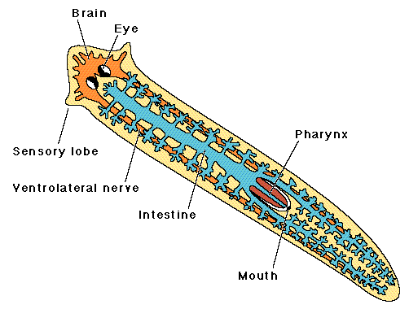
|
Parasitic members of this phylum, such as flukes
and tapeworms, are characterized by these modifications:
- loss of cephalization producing a head bearing
hooks and suckers to attach to the host as opposed to the sensory
organs of free-living forms
- extensive development of the reproductive
system coinciding with the loss of other systems (what do they do
but gain food from the host's digestion and reproduce,
anyway?)
- lack of a well-developed nervous and
gastrovascular system (the live in a fairly stable environment and
the host has already digested their food)
- development of a tegument that protects them
from host digestive juices
Both flukes and tapeworms use secondary or
intermediate hosts to transport the species from primary host to
primary host. The primary host is infected with the sexually mature
adult while the secondary host contains the larval
stage(s).
Class Turbellaria
The class Turbellaria includes freshwater planaria
such as Dugesia that feed on small organisms or the remains of
small creatures, as well as often colorful marine forms. Their small
size and ease of care also make Dugesia a common animals in
introductory biology labs. The planarian head is normally
arrow-shaped, with side extensions that are sensory organs for
detection of food and the presence of other organisms. Flatworms have
two light-sensitive eyespots that have pigmentation making them look
cross-eyed. The presence of three muscle layers facilitates varied
movement. Gland cells secrete a mucous material upon which the animal
slides or glides.
The animal captures food by wrapping itself around
its prey, entangling it in slime, and pinning it down. The
pharynx
is a muscular tube that extrudes from the mouth and through which
food is ingested. Often in biology labs the "prey" can be liver and
students can watch the pharynx extend out of the worm's body.
The flame
cell system functions in excretion and
consists of a series of interconnecting canals that run length of the
body on either side of the longitudinal axis and side branches of the
canals, each ending in a flame cell. The flame cell is a bulb-shaped
cell containing a tuft of cilia within the hollow interior of the
bulb. The cilia move back and forth, bringing water into the canals
that empty through pores at the body surface. This flame-cell system
functions in both water excretion and osmotic
regulation in a typical freshwater, free-living flatworm.
Planaria can reproduce both sexually and
asexually. They can constrict beneath the pharynx and each half will
grow into a whole animal by the process of regeneration. Planaria are
hermaphroditic, possessing both male and female sex organs, and can
cross-fertilize each other. Fertilized eggs are enclosed in a cocoon
and hatch in two to three weeks.
Class Trematoda
The class Trematoda includes flukes. Flukes, such
as blood, liver, and lung flukes are named after the organs they
inhabit. Fluke bodies tend to be oval and elongate. They lack a
definite head but have an oral sucker surrounded by sensory papillae.
Flukes have reduced digestive, nervous, and excretory systems.
Reproductive systems are well developed and usually
hermaphroditic.
The blood fluke, shown in Figure 20, causes
schistosomiasis, a disease found predominantly in tropical Africa and
South America. Unlike most flukes, blood flukes are male or female.
Flukes deposit eggs in blood vessels around the host's intestine. The
eggs migrate to the intestine and are passed out with feces. Larvae
hatch in water and swim about until they detect and enter a
particular species of snail. The larvae reproduce asexually and
eventually leave the snail. Once larvae penetrate human skin they
begin to mature in the liver, and implant in blood vessels of the
small
intestine. A weakened person is then more
likely to die from secondary diseases.
The Chinese liver fluke, shown in Figure 21,
requires two intermediate hosts. Humans become infected when they eat
uncooked fish. Adults migrate to the liver and deposit eggs in the
bile duct, which carries the eggs to the intestine. The larval flukes
must then pass through two intermediate hosts, a snail and a
fish.
Class Cestoda
The class Cestoda consists of the tapeworms, an
example of which is shown in Figure 22. The tapeworm scolex
(head/neck region) has hooks and suckers that allow the organism to
attach to the host's intestinal wall. Behind the head is a short neck
and then a long string of proglottids. Each proglottid segment
contains a full set of both male and female sex organs and very
little other structure. Since the animal does produce wastes, it
retains its excretory canals, but no digestive system is needed.
Being sessile organisms in a fairly stable environment, tapeworms
have only rudiments of nerves. Following fertilization, proglottids
become a bag of eggs that when mature, breaks off and passes out with
feces. If the eggs of tapeworms are ingested by pigs or cattle, the
larvae become encysted in the muscle of the hosts. The covering of
ingested eggs is digested away and the larvae burrow through the
intestinal wall and travel by bloodstream to lodge and encyst in
muscle; a cyst is a hard-walled structure sheltering a larval worm.
If humans eat the meat of infected pigs or cattle and fail to cook it
properly, they too become infected.
The
Phylum Nemertea: Ribbon Worms | Back
to Top
The phylum Nemertea include approximately 650
species of marine ribbon worms. Ribbon worms have a distinctive
eversible proboscis stored in a rhynchocoel. When the walls of the
rhynchocoel contract, the proboscis extends out of the body. The
proboscis is a long, hollow tube that can be everted and shot outward
through a pore located just above the mouth. It is used primarily for
prey capture, and for defense, locomotion, and burrowing. This phylum
is included as the organisms are also triploblastic. Several of the
fossils from the Cambrian-aged Burgess Shale are interpreted as
ribbon worms, and some extremely long worms have been found in the
Mediterranean (up to 100 feet long) and in the ocean under the
Antarctic ice shelves.
Rotifers (shown in Figure 23) belong to the phylum
Rotifera, which contains about 2,000 species. Rotifers are often
observed in biology lab preparations. Their digestive tract is the
inner tube and the rest of the animal is the outer tube (of a
tube-within-a-tube body plan). Rotifers are microscopic and abundant
in freshwater. A crown of cilia (corona) forms a rotating wheel that
serves as both an organ of locomotion and acts to deliver food to the
mouth.
|
Figure 23. Top: Anatomy of a typical
rotifer. These microscopic animals are commonly seen in lab
aquaria and cultures, but still exhibit the tube-with-a-tube
body plan. Image from Purves et al.,
Life: The Science of Biology, 4th Edition, by Sinauer
Associates (www.sinauer.com)
and WH Freeman (www.whfreeman.com),
used with permission. Bottom: Philodina whole mount
of a rotifer showing main external and internal structures.
Image from http://biodidac.bio.uottawa.ca.
|
|
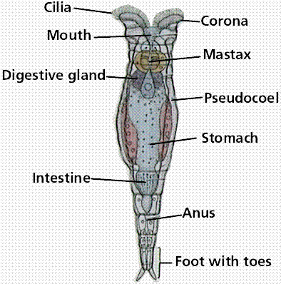
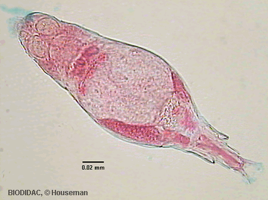
|
The
Tube-within-a-tube Body Plan: Phylum Nematoda | Back
to Top
The phylum Nematoda consists of several hundred
thousand species of roundworms, shown in Figure 24.
Most are free-living, although some are parasitic
(pinworms are thought to infect 30% of all US children).
Adult nematodes have a pseudocoelom
(tube-within-a-tube), a closed fluid-filled space that acts as a
hydrostatic skeleton, aids in circulation and dispersal of
nutrients. Nematodes lack a circulatory
system, but do have a well developed digestive system.
One nematode, Caenorhabditis elegans, has
only one thousand genes in its genome and its developmental pathways
are well known. C. elegans serves as a
model for eukaryote gene systems and has been extensively studied as
part of the human genome project.
Ascaris is a parasitic roundworm, and is
shown in Figure 25. These worms are unsegmented and have a smooth
outside wall. They move by whiplike motions. Mating produces eggs
that mature in the soil, limiting most roundworms to to warmer
climates. When eggs are swallowed, larvae burrow through the
intestinal wall, moving to the liver, heart and/or lungs. Once within
the lungs, larvae molt and, after ten days, migrate up the windpipe
to throat where they are swallowed. In the intestine, the mature
worms mate and the female deposits eggs that are passed out of the
body with feces. Feces must reach the mouth of the next host to
complete the life cycle, thus, proper sanitation is an important
aspect to prevent infection.
Humans contract Trichinella (the roundworm
that causes the disease trichinosis, illustrated in Figure 26) by
eating raw pork containing encysted larvae. Mature female adults
burrow into the wall of the small intestine. Live offspring are
carried by the bloodstream to the skeletal muscles where they encyst.
Religious dietary injunctions against eating pork may in part be a
reflection of the prevalence of this disease in the Middle East.
.
Filarial worms cause various diseases.
Dirofilaria, shown in Figure 27, causes heartworm in dogs, and
is a common filarial worm in temperate zones.
Elephantiasis, a disease associated with tropical
Africa, and is also caused by a filarial worm that utilizes mosquitos
as secondary hosts. Adult worms reside in and block lymphatic
vessels. This results in limbs of an infected individual swelling to
monstrous size. Elephantiasis is treatable in its early stages but
not after scar tissue has blocked lymphatic vessels.
Referenced Articles:
Reitner, J. 1990. Polyphyletic origin of the
"Sphinctozoans". In Rutzler, K. (ed.), New Perspectives in Sponge
Biology, Proceedings of the Third International Conference on the
Biology of Sponges (Woods Hole). pp. 33-42. Smithsonian Institution
Press, Washington, DC.
- Be able to complete the table below:
|
Phylum
|
Body Plan
|
Body Cavity Type
|
Symmetry
|
Tissue Layers
|
Example Organisms
|
|
Porifera
|
|
|
|
|
|
|
Cnidaria
|
|
|
|
|
|
|
Platyhelmenthes
|
|
|
|
|
|
|
Rotifera
|
|
|
|
|
|
|
Nematoda
|
|
|
|
|
|
- Be able to list the characteristics that distinguish animals
from the other members of domain Eukarya.
- Which feature(s) distinguish each of the following phyla:
Porifera, Cnidaria, Platyhelmenthes, Nematoda
- List the three cell types that make up the sponge body.
- What criteria is/are used for the subdivision of phylum
Porifera into taxonomic classes?
- What advantages would radial symmetry present as opposed to
bilateral symmetry? What advantages would bilateral symmetry
present as opposed to radial symmetry?
- List some of the economic and environmental importance of
members of phylum Cnidaria.
- List some of the various diseases caused by organisms
discussed in this chapter.
- There are several types of animal body: prepare a list of the
advantages that each type would present to the animal.
- The Five
Kingdoms A table summarizing the kingdoms of living
things.
- The
Radiation of the First Animals Dr. Jere Lipps presents a well
illustrated look at early animal evolution.
- The
University of Michigan Museum of Zoology's Animal Diversity
Web Follow the link to the Animal Diversity Web, the complete
collection; or search the site. This site proffers a tremendous
wealth of information organized phylogenetically.
- Introduction
to the Metazoa: Animals, Animals, Animals! This University of
California Berkeley Museum of Paleontology site offers excellent
information about the evolution and diversity of various animal
groups. A related site Learning
About the Vendian Animals offers images and text describing
the precambrian animals from the Vendian Period.
- Rugose
and Tabulate Corals Prepared by Dr Brian Engel of the
University of Newcastle, this page offers great photographs and
line drawings of various corals. Also included is a good, succinct
discussion of the biology of the coral animal.
- The
Parasitology Images List: A Collection of Images of Medically
Important Parasites Want to see what Ascaris looks
like? How about a tapeworm? Click on the links at the end of this
page and view images of human and animal parasites at this site by
Peter Darben.
- An
Illustrated Key to Nematodes Found in Fresh Water (also includes
plant-parasitic nematodes) Just in case you wanted to identify
those nematodes in the pond, here is a great site to facilitate
such a past time! Line drawings and a clear text illustrate the
value of such keys.
- What
is Caenorhabditis elegans and why work on it? An
introduction for those unfamiliar with 'The Worm' No, not
Dennis Rodman, but a real worm, C. elegans, a model
organism for the human genome project.
- Biology
of schistosomes and their hosts This website from the Natural
History Museum provides details about the cause of
schistosomiasis.
- The Coral Reef Conservation Program The US National
Oceanographic and Atmospheric Administration (NOAA) has a website
that presents information about the issues with coral reef
conservation.
All text contents ©1995, 1999, 2000, 2001, 2003, 2004, 2007
by M.J. Farabee. Use of the text for educational purposes is
encouraged.
Back to Table of Contents
Email: mj.farabee@emcmail.maricopa.edu


{kind=link}
{kind=link}
{kind=link}
{kind=link}
{kind=link}
{kind=link}
{kind=link}
{kind=link}
{kind=link}
{kind=link}